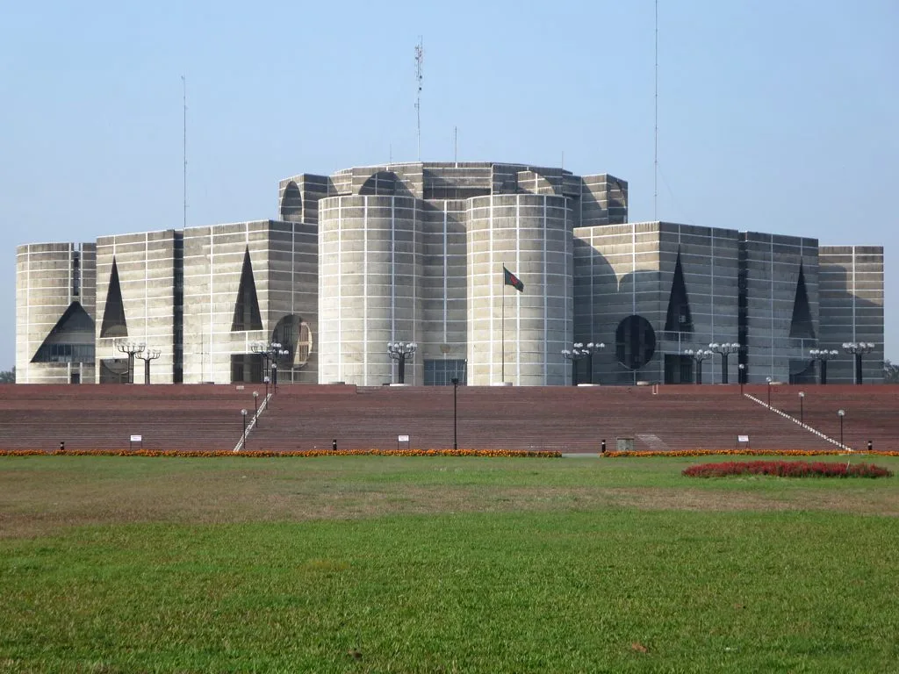

민주당, 인천서 정기국회 워크숍…李대통령, 28일 의원 전원 오찬
더불어민주당이 27일부터 인천에서 1박2일 일정으로 정기국회 대비 워크숍을 연다. 가을 정기국회를 앞두고 하반기 입법 전략과 국정 현안 대응 방향을 점검하는 자리로, 소속 의원 다수가 참석해 당의 국회 운영 기조를 가다듬을 예정이다. 워크숍은 28일 오전 일정을 끝으로 마무리되며, 참석 의원들은 이후 곧바로 서울로 이동할 계획이다. 매년 정기국회를 앞두고 열려온 이 워크숍은 여당 의원들이 한자리에 모여 당해 연도 국정 현안과 입법 과제를 종합적으로 점검하는 자리로 자리 잡아 왔다.
이재명 대통령은 워크숍 종료에 맞춰 28일 청와대 영빈관에서 민주당 국회의원 전원을 초청해 오찬을 함께하기로 했다. 당 워크숍 일정과 맞물려 마련된 자리인 만큼 소속 의원 대부분이 참석할 것으로 예상된다. 대통령이 여당 의원 전체를 한자리에 불러 오찬을 갖는 것은 취임 2년차를 맞아 당청 간 공조를 재정비하려는 상징적 행보로 해석된다. 대통령과 여당 의원 전원이 한 공간에 모이는 것 자체가 이례적인 규모의 행사인 만큼, 당청 간 밀착 행보를 대내외에 각인시키려는 포석이라는 해석도 나온다.

이번 오찬은 정기국회 개회를 코앞에 두고 이뤄진다는 점에서 의미가 남다르다. 정기국회에서는 예산안 심사를 비롯해 각종 민생·개혁 입법 과제가 줄줄이 대기하고 있어, 여당으로서는 당내 결속을 다지고 국정운영 방향에 대한 공감대를 넓힐 필요가 큰 시점이다. 워크숍에서 논의된 입법 우선순위와 전략이 이튿날 오찬 자리에서 대통령에게 직접 보고되거나 공유될 가능성도 거론된다. 정기국회 회기 내내 여야 간 공방이 예상되는 예산안과 쟁점 법안 처리 문제에 대해서도 당정 간 사전 조율이 이뤄질 것이라는 관측이 나온다.
집권 2년차를 맞은 이 대통령으로서는 취임 초반의 국정 동력을 이어가기 위해 당의 협조가 어느 때보다 중요한 상황이다. 임기 첫해 각종 개혁 입법과 대외 성과를 앞세워 국정을 이끌어 온 정부·여당은 이제 성과를 구체적인 정책으로 이어가야 하는 국면에 접어들었다는 평가를 받는다. 이런 맥락에서 당정 간 소통을 강화하려는 이번 오찬은 향후 국정운영의 방향을 가늠할 수 있는 자리로도 주목받는다.

당 안팎에서는 이번 워크숍과 오찬이 단순한 격려 행사를 넘어, 정기국회를 앞둔 여당의 결집력을 대내외에 보여주는 계기가 될 것이라는 시각도 나온다. 최근 당 지도부 교체 이후 새 지도부 체제가 자리를 잡아가는 시점이라는 점에서, 이번 행사가 새 지도부와 청와대 간 협력 관계를 확인하는 자리로 기능할 것이라는 관측도 있다. 신임 지도부로서는 이번 워크숍이 당내 결속을 다지고 소속 의원들과의 스킨십을 넓히는 첫 시험대가 될 것으로 보인다.
다만 정기국회 문턱에서 여야 간 입법 쟁점을 둘러싼 대립이 이어지고 있는 만큼, 워크숍에서 논의될 전략이 실제 국회 운영에서 얼마나 매끄럽게 관철될지는 지켜봐야 한다는 신중론도 제기된다. 예산안 심사와 각종 법안 처리를 놓고 여야 간 힘겨루기가 예상되는 상황에서, 이번 당정 행보가 향후 정기국회 정국의 분수령이 될지 주목된다. 야당 역시 정기국회를 앞두고 자체 전략을 다듬고 있는 만큼, 여야 간 신경전은 정기국회 개회와 동시에 한층 뜨거워질 전망이다.